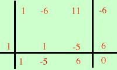

|
x3 - 6x2 + 11x - 6 = 0 considero il polinomio associato x3 - 6x2 + 11x - 6 = Devo scomporlo Non posso raccogliere niente a fattor comune Passo a considerare il numero di termini : 4 Enumero le varie possibilita' Non e' un cubo di binomio Non e' un raccoglimento parziale Non e' un raggruppamento Devo provare Ruffini i possibili divisori sono polinomi del tipo (x - a) essendo a un divisore del termine noto, cioe' a puo' essere: +1 -1 +2 -2 +3 -3 +6 -6 Provo a vedere se e' scomponibile per (x - 1) P(1)= (1)3 - 6(1)2 + 11(1) - 6 = 1 - 6 + 11 - 6 = 0  (x - 1) e' un fattore quindi eseguo la divisione di Ruffini e scrivo x3 - 6x2 + 11x - 6 = (x - 1)(x2 - 5x + 6) Ora posso scrivere l'equazione di partenza come (x - 1)(x2 - 5x + 6) = 0 e per la legge di annullamento del prodotto equivale alle due equazioni
x - 1 = 0 x = 1 risolvo la seconda x2 - 5x + 6 = 0 5 x1,2 = ---------------------- 2 eseguo i calcoli 5 x1,2 = ---------------------- 2 5 x1,2 = ----------- 2
|